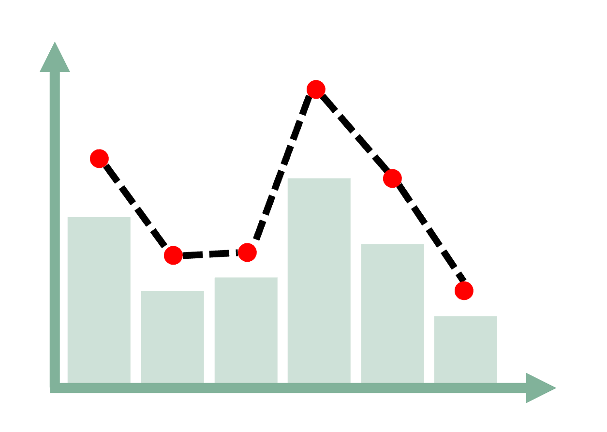
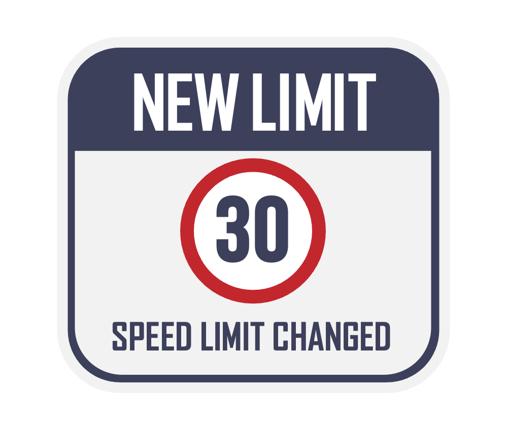
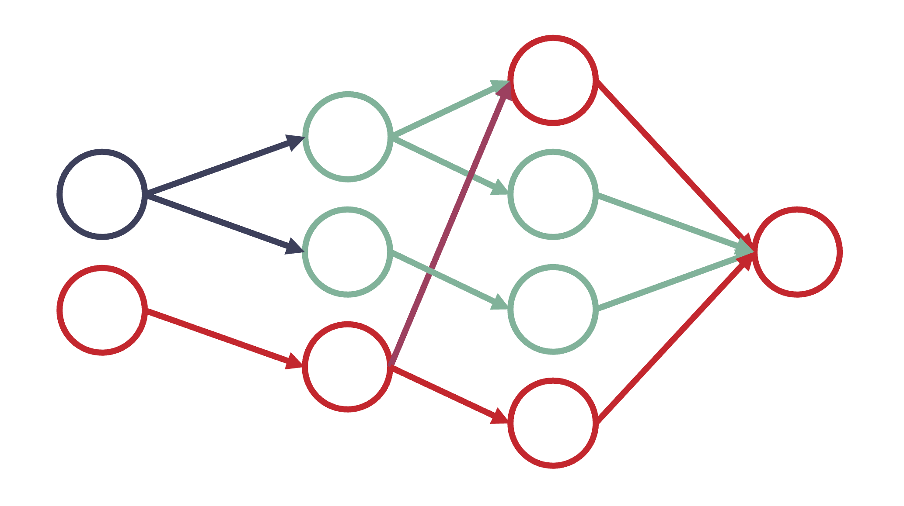
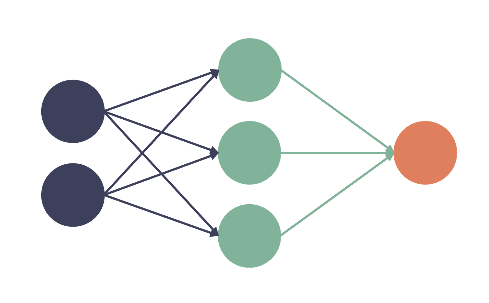
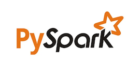
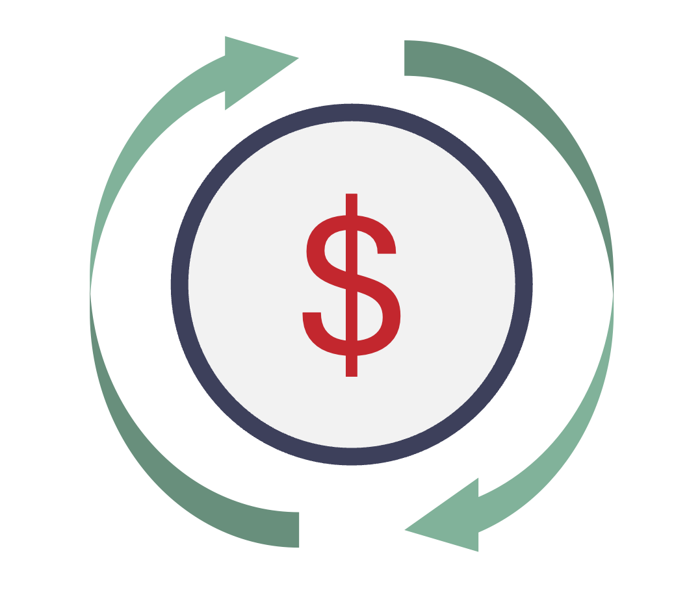

Featured Projects
2025
Crash Risk Modelling (Statistics)
Extended analysis using NZTA datasets to explore road-type similarity, traffic volume, and speed-related crash causes. Involved performing data wrangling, and applying statistical models to identify key risk factors for vulnerable road users.
2025
Speed regulations and road safety analysis (Spatial)
Capstone project applying spatial-temporal analysis to assess the impact of speed limit changes on overall crash occurrence and injury severity. The project was developed as part of an academic collaboration between the University of Canterbury and law enforcement.
📊 View Presentation2025
Teaching Python, R & SQL (Mentorship)
Volunteer initiative to teach foundational and intermediate data skills to adult Russian-speaking learners. Designed and delivered interactive online classes covering coding, data wrangling, and database queries using practical, project-based approach.
2025
Lottery Ticket Hypothesis (DL Reproduction)
Course project investigating neural network pruning through reproduction of the Lottery Ticket Hypothesis (Frankle & Carbin, 2019). Included replication of test accuracy trends, critical analysis, and structured reporting of limitations and future work.
📄 View Report2025
Predictive modeling in healthcare (Statistics)
Coursework project applying advanced preprocessing, regression modeling, and ensemble learning techniques on biomedical data. Developed multiple models (Elastic Net, XGBoost, SVM, etc.), implemented extensive tuning strategies, and deployed a Shiny app.
📄 ShinyApp link will be provided soon2025
Introduction to Neural Networks (In Russian)
Educational presentation for Russian-speaking learners exploring the evolution of neural networks from foundational concepts to advanced architectures, along with covering training algorithms, evaluation methods, and real-world AI applications.
📊 View Presentation2025
Music Recommendation System (PySpark)
Developed a scalable song recommender using collaborative filtering on the Million Song Dataset (48M+ records). Explored data structure, applied ALS model, and validated via ranking metrics. Addressed cold-start, sparsity, and real-world deployment strategies.
📄 View Report2024
Consumer Refund Analysis (Text Analysis)
Applied text analysis using AntConc and Python to identify inconsistencies in seller communications and return policies. Highlighted contradictions between claims and written responses, resulting in two successful refund resolutions. Demonstrated practical NLP skills in dispute cases.
Outcomes are confidential Python AntConc NLP2023
Conference Data Management (SQL)
Developed a database solution for the Amputees Federation of New Zealand through discovery, evaluation, and implementation phases. Created a normalized SQL Server database and built Power BI interactive reports to support data-driven decision-making for events.
🖼️ Workflow Diagram 📄 View Report2024
CBD Activity Analysis (Data wrangling)
Analysed whether scheduling city roadworks during school holidays could optimise planning by reducing Health & Safety risks, lowering traffic management costs in high-traffic areas, and minimising disruption to local businesses and the public, using data-driven insights.
📄 View Report 📄 View Methods2023
Agora e-commerce portal (PHP)
Developed a multi-role e-commerce platform using server-side programming - PHP, implementing CRUD operations, user authentication, and advanced SQL queries. Integrated SOLID principles and security best practices, and presented results via a structured PowerPoint presentation.
🖼️ View Presentation2023
Taonga Māori o Ara (Mobile app)
A mobile app prototype designed for Android smartphones and built with MIT App Inventor to promote a guided tour of Māori artworks across Ara Madras City Campus. Designed with a gamified, user-friendly interface, integrated Firebase data storage, and interactive navigation features.
🖼️ View Poster2023
Bookstore Website (Web-development)
Designed and built a multi-page antique bookshop site to explore early web technologies. The project focused on applying HTML, CSS, and basic JavaScript to create an interactive browsing experience while ensuring accessibility and cross-device compatibility.
🖼️ View Poster